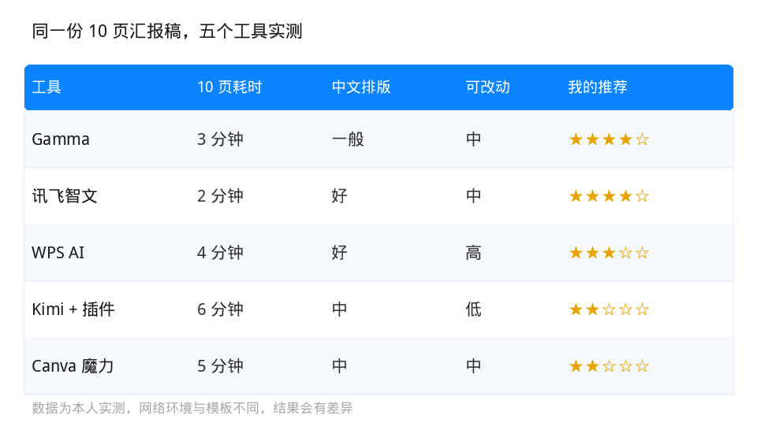

实测记录
做的事：把一份随手写的提纲，做成 10 页汇报 PPT
原来：约 3 小时 现在：最快 2 分钟出初稿
代价：五个工具来回切换，搭进去一整个下午
做 PPT 真正费时间的，从来不是「想讲什么」。
是想清楚了，还得一页页把它摆好看。找模板、调字号、对齐、配图、让每一页看起来风格一致。
这部分，现在确实可以交出去了。
但交出去之后，五个工具给我的答案并不一样。

同一份提纲，五个工具的整体表现
1
我拿什么做的测试
用一个真实场景，不搞演示题。
给老板汇报第四季度的市场投入复盘。要求十页：封面、结论、三个渠道数据、问题、明年计划、结尾。
一开始我只准备了六百字的提纲，剩下的全交给工具。
只看三件事：出稿快不快、中文排版顺不顺、生成完还能不能改。
第三点最重要。不能改的 PPT，等于没做完。
2
五个工具，一句一个结论
讯飞智文。最快，中文最顺。两分钟出十页，标题和小标题读起来像人写的，不是「赋能」「闭环」那套话。
缺点是模板偏保守。做内部汇报绰绰有余，做对外发布会就显得土。
Gamma。最像被设计师动过手。它会自己判断哪页该配图、哪页该做成数据卡片，版式留白也讲究。
问题在中文。英文模板套中文，断行经常很难看，几个字就被挤到下一行。而且想导出可编辑的 PPTX 要开会员。
WPS AI。生成质量排在中游，但它有个别人比不了的优势——就长在 WPS 里。
生成完直接改，不用导出、不用换软件。真到要交差那天，这一点能救急。
Kimi 加插件。它强的是把提纲扩成大纲，成品还得自己排。
本来就会做 PPT 的人用它很爽，0 基础的人用它等于绕远路。
Canva 魔力设计。封面是五个里最好看的，正文页就一般。做活动海报合适，做长汇报不合适。
3
如果只留两个
要马上交差，选讯飞智文。两分钟能出一份真能拿出手的初稿。
后面还要大改，选 WPS AI。生成一般，但省掉了导出导入那堆麻烦。
判断标准就一句话：你更需要「第一版好看」，还是「后面好改」。
4
三个绕不开的坑
坑一，它会把每页都塞满字。
默认按「讲稿」的思路生成，一页三四段。你得提前写死：每页不超过三行，每行不超过二十字。
坑二，数据页的数字是编的。
我让它做一张渠道投入占比的饼图，比例看着特别合理，全是我没给过的数。它只是把「看起来像」的数字填进去了。
凡是数字和图表，一律自己填。这一步省不得。
坑三，英文模板会把中文撑变形。同样一句话，中文比英文长三成，套进固定文本框就容易溢出，或者被压得只剩半行。
5
可以直接抄的提示词
五个工具我都用同一段，把方括号里的换成你的：
帮我做一份 10 页的汇报 PPT，主题是[第四季度市场投入复盘]。
听众是[公司管理层]，他们只关心[钱花得值不值]。
结构按：封面、一句结论、三个渠道的数据、一个问题、明年计划、结尾。
要求：
1. 每页不超过 3 行字，每行不超过 20 字
2. 数据页留空位，不要自己填数字
3. 全部使用中文，不要出现英文模板里的占位符
4. 配色只用一种主色，深色正文配浅底
先给我大纲，我确认后再生成页面。
最后那句别省。先看大纲，能省掉后面九成的返工。
因为结构错了，页面再好看也白搭。
说点实话
这五个工具省掉的，是我原来耗在排版上的两三个小时。
但「这份 PPT 要说服谁」「我的结论到底是什么」，一句都没被替掉。
而且现在有个新问题：AI 生成的 PPT 都很像，版式、配色、连转场都差不多。
好看变便宜了。
所以值钱的部分，回到了你到底想说什么。
下次我打算试试用同一段提示词跑 20 份不同主题，看看它在别的场景还稳不稳。
跑完再写一篇。
关注后回复「PPT」，拿这份五工具对比表、上面那段提示词，还有我常用的十页汇报结构模板。
文中为本人实测，网络环境与模板不同结果会有差异。